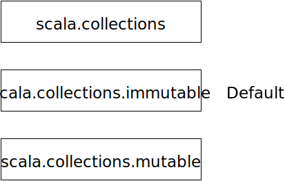
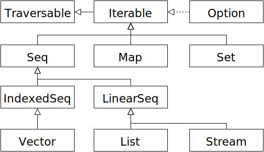

<!doctype html>
<html lang="en">

  <head>
    <meta charset="utf-8">

    <title>Collections & For-Comprehension</title>

    <meta name="description" content="Collections & For-Comprehension">
    <meta name="author" content="Andreas Schroeder">

    <meta name="apple-mobile-web-app-capable" content="yes" />
    <meta name="apple-mobile-web-app-status-bar-style" content="white-translucent" />

    <meta name="viewport" content="width=device-width, initial-scale=1.0, maximum-scale=1.0, user-scalable=no, minimal-ui">

    <link rel="stylesheet" href="css/reveal.css">
    <link rel="stylesheet" href="css/theme/white.css" id="theme">
    <link rel="stylesheet" href="css/deck.css">
    <link rel="stylesheet" href="//cdn.jsdelivr.net/font-hack/2.018/css/hack.min.css">

    <!-- Code syntax highlighting -->
    <link rel="stylesheet" href="lib/css/github.css">

    <!-- Printing and PDF exports -->
    <script>
      var link = document.createElement( 'link' );
      link.rel = 'stylesheet';
      link.type = 'text/css';
      link.href = window.location.search.match( /print-pdf/gi ) ? 'css/print/pdf.css' : 'css/print/paper.css';
      document.getElementsByTagName( 'head' )[0].appendChild( link );
    </script>

    <style>
      section.smaller>pre {
        font-size: 50%;
      }

      section.expand>pre code {
        max-height: 500px;
      }

      section.expand>pre {
        width: 100%;
      }

      .reveal section img {
        border: none;
        box-shadow: none;
      }

      .reveal .slide-number {
        background-color: white;
      }

      .hljs-comment {
        color: #006400;
      }

      .reveal section img.table-icon {
        margin: 10px;
        margin-right: 0px;
        margin-left: 60px;
        width: auto;
        height: 85%;
        vertical-align: middle;
      }
    </style>

    <!--[if lt IE 9]>
    <script src="lib/js/html5shiv.js"></script>
    <![endif]-->
  </head>

  <body>

    <div class="reveal">

      <!-- Any section element inside of this container is displayed as a slide -->
      <div class="slides">

<!-- ########################################################################################### -->
<!-- START                                                                                       -->
<!-- ########################################################################################### -->

<section>

<section data-markdown data-background="images/background.png"><script type="text/template">
<h3 style="position: absolute; display: block; top: -50px; left: 0px;">Collections &amp; For-Comprehensions</h3>
<p style="position: absolute; display: block; top: 0px; left: 0px;">Andreas Schroeder</p>


</script></section>

<section data-markdown><script type="text/template">
### Materials

- Slides are found [in Confluence](http://confluence.as24.local/display/TechnologyChange/Scala+School)
- Code for exercises is found at https://github.com/AutoScout24/scala-school/tree/master/forcomp

</script></section>
</section>

<section>
<section data-markdown class="smaller expand"><script type="text/template">
### Into Scala Collections

- General collection types: List (Scala name: Seq), Set, Map
- These collection types have a lot in common
  - therefore several trait mixins, e.g. `Traversable`.
- Favor immutable variants over mutable for
  - Purity (no side effects)
  - Thread-safety
  - Conciseness
</script></section>

<section data-markdown class="smaller expand"><script type="text/template">
### Packages



</script></section>

<section data-markdown class="smaller expand"><script type="text/template">
### Traits



</script></section>

<section data-markdown><script type="text/template">
### Seq

Indexing

```scala
val s = Seq("a", "b", "c")
s(1)                 // ↪ "b"
s.apply(0)           // ↪ "a"
s.isDefinedAt(4)     // ↪ false
s.length             // ↪ 3
s.indices            // ↪ Range(0, 1, 2)
```

Search
```scala
s.indexOf("c")                   // ↪ 2
s.lastIndexOf("b")               // ↪ 1
s.indexOfSlice(Seq("b", "c"))    // ↪ 1
```

Additions
```scala
"f" +:  s    // ↪ List(f, a, b, c)
 s  :+ "f"   // ↪ List(a, b, c, f)
```
</script></section>

<section data-markdown><script type="text/template">
### Seq

Tests
``` scala
val s = Seq("a", "b", "c")
s.contains("a")                // ↪ true
s.startsWith(Seq("a", "b"))    // ↪ true
s.endsWith(Seq("a", "b"))      // ↪ false
```

Replacement
``` scala
s.updated(1, "f")    // ↪ List(a, f, c)
```
</script></section>

<section data-markdown><script type="text/template">
### Higher-level collection operations

Transforming a collection
``` scala
val strings = Seq("1", "2", "3")
val numbers = strings.map(s => s.toInt)   // ↪ List(1, 2, 3)
```

Selecing values
``` scala
def odd(n: Int) = n % 2 == 1
numbers.filter(odd)          // ↪ List(1, 3)
numbers.filterNot(odd)       // ↪ List(2)
numbers.find(n => n > 4)     // ↪ None
```
</script></section>

<section data-markdown><script type="text/template">
### Set

Containment
``` scala
val s = Set("a", "b", "c")
s.contains("a") // ↪ true
s.apply("d")    // ↪ false
s("b")          // ↪ true
```

Set operations
``` scala
Set(1, 2) ++ Set(2, 3) // ↪ Set(1, 2, 3)
Set(1, 2) -- Set(2, 3) // ↪ Set(1)
Set(1, 2) &  Set(2, 3) // ↪ Set(2)
```

Or use `intersect`, `union`, `diff`
</script></section>

<section data-markdown><script type="text/template">
### Exercise

Build a tool that allows to explore the schedule of a conference
- A conference consists of tracks that have talks
- A talk has a title, time and one or more themes

In class `Track`
- implement the method `talksOn`
- implement the method `talkAt`
- Hint: exclude test cases by using `ignore`

</script></section>

<section data-markdown class="expand"><script type="text/template">
### flatMap

Using `map` sometimes produces nested collections

``` scala
val input = Seq("1 2", "3 4", "5")
input.map(_.split(" ")) // ↪ List(Array(1, 2), Array(3, 4), Array(5))
```

`flatMap` produces a flattened collection

``` scala
input.flatMap(_.split(" "))       // ↪ List(1, 2, 3, 4, 5)
input.map(_.split(" ")).flatten   // ↪ List(1, 2, 3, 4, 5)
```

`flatten` should be avoided, as it
- requires a second pass (slower)
- produces intermediate nested collections (produces garbage)
</script></section>

<section data-markdown><script type="text/template">
### Conversion

To convert between collection types, use `to`

``` scala
val numbers = Seq(1,2,3,2,4,5)
numbers.to[Set] // ↪ Set(5, 1, 2, 3, 4)
```

A collection of pairs can be converted to a `Map` with `toMap`

``` scala
val words = Set(1 -> "one", 2 -> "two")
val map = words.toMap // ↪ Map(1 -> one, 2 -> two)
map.to[Seq]           // ↪ Vector((1,one), (2,two))
```

</script></section>

<section data-markdown><script type="text/template">
### Exercise

- In class `Schedule`, implement the method `talks`
- In class `Track`, implement the method `themes`
- Hint: try to use `map` first and read the error message
</script></section>

<section data-markdown><script type="text/template">
### Map

Lookup
```scala
val words = Map(1 -> "one", 2 -> "two", 3 -> "three")
words(1)                      // ↪ "one"
words.get(4)                  // ↪ None
words.getOrElse(3, "number")  // ↪ "three"
```

Modifications
```scala
words + (4 -> "four")      // ↪ Map(1 -> one, 2 -> two, 3 -> three, 4 -> four)
words ++ Map(4 -> "four")  // ↪ Map(1 -> one, 2 -> two, 3 -> three, 4 -> four)
words ++ Map(4 -> "four")  // ↪ Map(1 -> one, 2 -> two, 3 -> three, 4 -> four)
words - 3                  // ↪ Map(1 -> one, 2 -> two)
words -- Seq(1, 2)         // ↪ Map(3 -> three)
```
</script></section>

<section data-markdown><script type="text/template">
### read the collections api

Especially [Traversable](http://www.scala-lang.org/api/2.11.8/#scala.collection.Traversable)
offers many helpful methods

- collect, collectFirst
- count, groupBy, orderBy
- take, takeWhile, drop, dropWhile
- exists, forall
</script></section>

<section data-markdown><script type="text/template">
### For-Comprehension

Scala offers a powerful alternative syntax for transforming data

```scala
val strings = Seq("1", "2", "3")
val numbers = for (s <- strings) yield s.toInt
```

Syntax
- generators define what to iterate
- yield-expression defines what to produce
- for comprehension is syntactic sugar for map, flatMap, filter
</script></section>

<section data-markdown><script type="text/template">
### Side effecting with for-comprehension

It is possible to use for-comprehensions for side effects

```scala
for (s <- Seq("1", "2", "3")) println(s)

// ⇝ 1
// ⇝ 2
// ⇝ 3
```
</script></section>

<section data-markdown><script type="text/template">
### Multiple Generators

- For-comprehensions support multiple generators
- Generators are evaluated in the context of its predecessors

```scala
for {
  i <- 1 to 3
  j <- 1 to i
} yield i * j
```
</script></section>

<section data-markdown><script type="text/template">
### For-Comprehension guards

- Filtering can be done through guards to skip traversals

```scala
for {
  i <- 1 to 3
  j <- 1 to i
  if i + j < 5
} yield i * j
```
</script></section>

<section data-markdown><script type="text/template">
### For-Comprehension Patterns

- Patterns can be used to filter as well

```scala
val words = Map(1 -> "one", 2 -> "two", 3 -> "three")
for {
  (i, "three") <- words
} yield i
```
</script></section>

<section data-markdown><script type="text/template">
### Exercise

- In class `Schedule`, implement the method `talksOn`
- Optional: implement `themeCount` and `themeRank`
</script></section>


</section>


<section>

<section data-markdown><script type="text/template">
# Q & A

</script></section>

</section>

<!-- ########################################################################################### -->
<!-- END                                                                                         -->
<!-- ########################################################################################### -->

      </div>

    </div>

    <script src="lib/js/head.min.js"></script>
    <script src="js/reveal.js"></script>

    <script>

      // Full list of configuration options available at:
      // https://github.com/hakimel/reveal.js#configuration
      Reveal.initialize({
        controls: true,
        progress: true,
        history: true,
        center: true,

        slideNumber: 'c',
        transition: 'slide', // none/fade/slide/convex/concave/zoom

        // Optional reveal.js plugins
        dependencies: [
          { src: 'lib/js/classList.js', condition: function() { return !document.body.classList; } },
          { src: 'plugin/markdown/marked.js', condition: function() { return !!document.querySelector( '[data-markdown]' ); } },
          { src: 'plugin/markdown/markdown.js', condition: function() { return !!document.querySelector( '[data-markdown]' ); } },
          { src: 'plugin/highlight/highlight.js', async: true, callback: function() { hljs.initHighlightingOnLoad(); } },
          { src: 'plugin/zoom-js/zoom.js', async: true },
          { src: 'plugin/notes/notes.js', async: true }
        ]
      });
    </script>

  </body>
</html>
